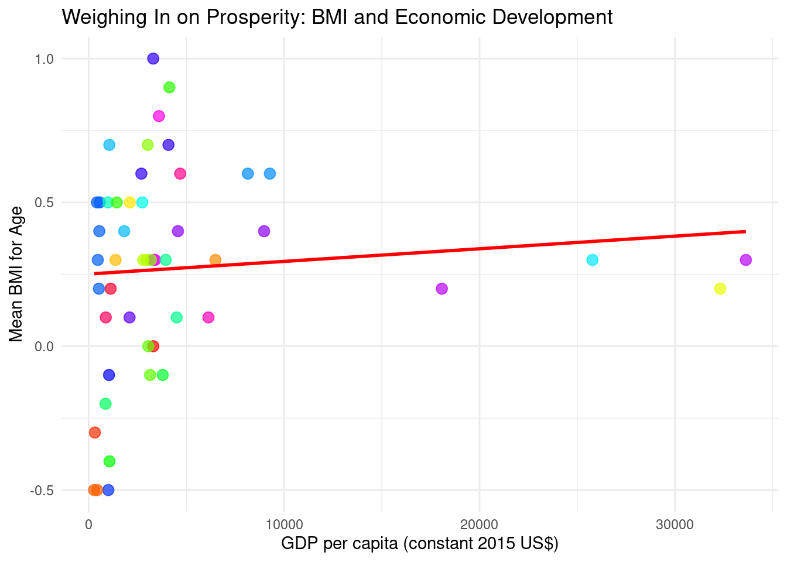

BMI-for-Age Analysis Across Countries
Mapping Global Health: Exploring Mean BMI-for-age Across Countries
In our journey to understand global health dynamics, we delve into the diverse landscapes of mean BMI-for-age values across countries. Using data visualization, we map out these nuances, revealing a tapestry of health disparities and trends. The gradient of colors on the map tells a story of varying nutrition statuses, from vibrant hues denoting higher BMI-for-age values to subdued tones indicating lower values. Through this visual narrative, we uncover insights into regional health inequalities, societal norms, and economic influences on nutrition. Join us as we navigate through continents, unraveling the intricate relationship between BMI and societal well-being.
BMI Gender Gap: Exploring Sex Disparities
In the realm of global health and well-being, understanding the nuances of gender disparities is crucial for crafting effective interventions. Visualizing these discrepancies can often shed light on underlying trends and patterns, offering valuable insights into areas that require attention and action. One such visualization that caught my attention recently was a striking bar chart depicting the gender gap in Body Mass Index (BMI) across different countries. The chart’s simplicity belied its profound implications, as it vividly showcased the disparities in BMI between males and females in various parts of the world. Each bar on the chart represented a country, while the height of the bar reflected the magnitude of the gender gap in BMI. Some bars towered high, indicating significant differences between male and female BMI, while others stood relatively shorter, suggesting more equitable distributions. The color gradient used to fill the bars added an extra layer of meaning, transitioning from cool blues to fiery reds. This subtle visual cue seemed to underscore the urgency of addressing these disparities, framing the issue not just as a matter of statistics, but as a human concern deserving of attention and action. What struck me most about the chart was its ability to tell a story without words. With just a glance, one could discern the stark contrasts between countries, revealing underlying societal factors that contribute to these disparities. It was a poignant reminder of the complex interplay between culture, economics, and health outcomes.
Weighing In on Prosperity: BMI and Economic Development

In the intricate interplay of global health and economic prosperity, understanding the relationship between Body Mass Index (BMI) and economic development is of paramount importance. This narrative embarks on a compelling exploration of this dynamic connection, aiming to decipher whether a correlation exists between mean BMI-for-age and key economic indicators such as GDP per capita or Gross National Income (GNI). Through the lens of a scatter plot, we delve into the nuances of this relationship, seeking to unravel patterns and trends that may illuminate broader socioeconomic dynamics. Each data point on the scatter plot represents a country, with its position determined by its mean BMI-for-age and corresponding economic development indicator. Our journey begins with an examination of the scatter plot’s landscape, scanning for discernible clusters and outliers. We pose the fundamental question: Do nations with higher economic development tend to exhibit elevated mean BMI-for-age values? As we navigate through the data points, we scrutinize potential outliers, probing deeper to understand the underlying factors contributing to any discrepancies between BMI and economic prosperity. This exploration extends beyond mere statistical analysis, delving into the multifaceted factors shaping global health outcomes. By identifying outliers and investigating potential explanations for variations in BMI across different economic contexts, we aim to shed light on the complex interplay between societal factors, lifestyle choices, and economic development. Ultimately, this story serves as a compelling testament to the intricate relationship between BMI and economic development, offering valuable insights into the broader landscape of global health and prosperity. Through rigorous analysis and thoughtful inquiry, we endeavor to uncover actionable insights that may inform policies and interventions aimed at promoting health equity and socioeconomic well-being on a global scale.
Evolving Health Landscapes: Global BMI Trends Over Time
In the dynamic tapestry of global health, understanding the evolution of Body Mass Index (BMI) trends over time is paramount. This narrative embarks on a captivating journey through time to explore the shifting landscapes of mean BMI-for-age on a global scale. Using the powerful medium of a time series chart, we delve into the rich tapestry of historical data, illuminating trends and patterns that have shaped the health trajectories of nations and regions worldwide. Our exploration begins by tracing the trajectories of mean BMI-for-age across different countries or regions, spanning decades of data. Through the lens of the time series chart, we unveil the ebb and flow of BMI trends, observing periods of stability, acceleration, and deceleration. These visual cues serve as windows into the complex interplay of factors influencing population health, from socio-economic development to cultural norms and healthcare policies. As we traverse through the annals of time, we uncover moments of significant change and inflection points in BMI trends. These pivotal junctures prompt deeper inquiry, as we seek to unravel the underlying forces driving these shifts. We examine the influence of economic development, changes in diet and lifestyle, and the impact of healthcare interventions on BMI trajectories, shedding light on the multifaceted nature of global health dynamics. Through rigorous analysis and thoughtful reflection, we endeavor to extract insights that transcend mere statistical trends, offering glimpses into the broader narratives of human well-being and resilience. By contextualizing BMI trends within the broader socio-economic and cultural contexts, we aim to foster a deeper understanding of the complexities of population health and inform strategies for promoting health equity and resilience in an ever-changing world. As I reflected on the chart, I couldn’t help but feel a sense of responsibility to advocate for change. By bringing attention to these disparities and engaging in meaningful dialogue, we can work towards creating a more equitable world where everyone has the opportunity to lead healthy and fulfilling lives.